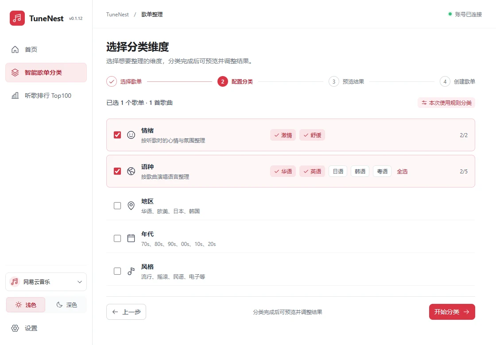
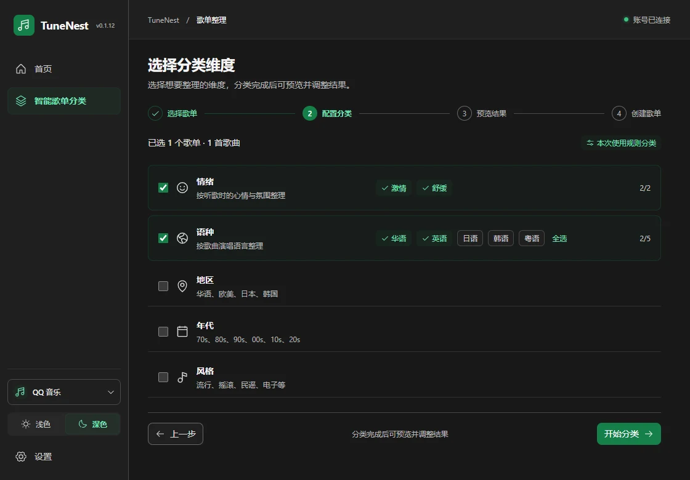

选择你的分类方式
情绪、语种、地区、年代、风格，按需选择维度和子类目，不必每次从头手动分拣。
舒缓华语00s流行
歌单整理 · 桌面版
按情绪、语种、地区、年代与风格整理收藏。
可选 AI 辅助判断，先预览，再创建。
网易云音乐 · QQ 音乐实验接入

音乐平台
扫码登录、歌单分类与听歌排行 Top100。
独立账号与歌单流程，创建和写回仍在验证中。
两个平台的登录状态分别保存，可单独退出当前账号。
围绕整理音乐这件事
情绪、语种、地区、年代、风格，按需选择维度和子类目，不必每次从头手动分拣。
查看每组歌曲，手动调整不合适的分类。确认名称和已有歌单的处理方式后，再开始创建。
网易云支持追加、替换或跳过；QQ 暂不支持替换。
根据歌名、歌手等信息，辅助判断情绪与风格，为基础规则难以判断的歌曲补充分类。
不配置 AI 也可以继续使用基础分类。

熟悉的平台，自己的偏好
网易云红、QQ 音乐绿，随平台切换。浅色与深色即时切换，下次打开继续使用你的选择。
使用方式
打开桌面程序，选择平台，用相应手机 App 扫码并确认登录。
选中要整理的歌单，再选择情绪、语种等分类方式。
检查分类结果，将不合适的歌曲移到其他类别。
核对歌单名称和同名处理方式，创建后检查结果。
AI 可选
默认提供 Xbot AI 中转站，也支持 DeepSeek 和智谱。选择渠道、填写对应 API Key，即可在软件里测试调用。
各渠道密钥分别保存。AI 调用费用与试用额度以对应平台说明为准。
版本与下载
桌面版正在持续完善，下载入口以仓库中实际发布的附件为准。
正在查询桌面测试版安装包…
查看发布记录 ↗新版安装包将通过 GitHub Releases 提供。
适用于网易云音乐网页端，与桌面版分别构建。
查看扩展历史版本 ↗解压后，在扩展管理页加载已解压的扩展程序。
QQ 音乐接入仍属实验功能，尚未完成真实账号完整验收。macOS 安装包尚未发布。
常见问题
不需要。可以先用基础分类，之后再在设置里配置 AI。AI 会辅助补充规则难以判断的分类，不保证每首歌曲都判断准确。
两个平台使用独立的登录与歌单流程。QQ 仍在实验验证中，暂不支持替换已有歌单；听歌排行 Top100 目前仅对网易云开放。
这是介绍与下载页面。桌面功能需要安装并打开 TuneNest；旧扩展则需要在浏览器中单独安装。
桌面版的音乐登录凭据与 AI API Key 保存在本机系统凭据存储中。启用 AI 时，歌曲名称、歌手等必要信息会发送到你选择的渠道。此官网没有账号或密钥输入表单；站点保留原有 Umami 与 Google Analytics 访问统计。
分类结果可以手动调整；创建前请核对歌单和同名处理方式。QQ 的网页接口可能变化，实验功能建议先使用专门的测试歌单。AI 调用是否收费及赠送额度以渠道说明为准。